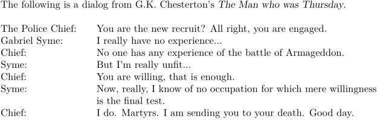

Syntax (autogenerated)
Syntax
| \tab{...}... | |
| {...} | text |
| ... | text |
Description
Start an indented paragraph with a word or two in front of it. This environment was created using \definedescription[tab], and so is an instance of description. By default, there is 4em of space for the paragraph key, 2em between the key and the paragraph proper, and the key is set in normal font.
Example
-
\setuptab[sample={The Police Chief:}] The following is a dialog from G.K. Chesterton's {\em The Man who was Thursday}. \blank[line] \tab{The Police Chief:} You are the new recruit? All right, you are engaged. \par \tab{Gabriel Syme:} I really have no experience... \par \tab{Chief:} No one has any experience of the battle of Armageddon. \par \tab{Syme:} But I'm really unfit... \par \tab{Chief:} You are willing, that is enough. \par \tab{Syme:} Now, really, I know of no occupation for which mere willingness is the final test. \par \tab{Chief:} I do. Martyrs. I am sending you to your death. Good day. \par
- 
See also
| Bug report: this command is not documented in the xml files (See: Bug List) |
Help from ConTeXt-Mailinglist/Forum
All issues with: